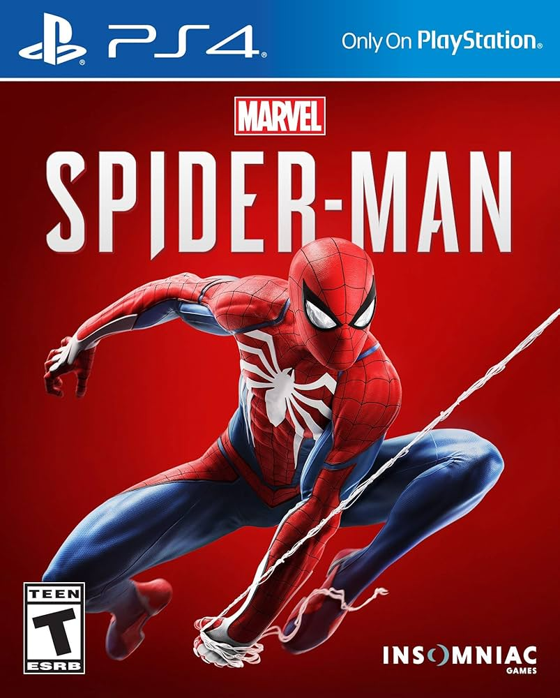

Brief History Of Video Games
The history of video games began in the 1950s and 60s with mainframe
computer experiments like Spacewar! and Tennis for Two, leading to the
first home console, the Magnavox Odyssey, and the first arcade hit,
Pong, in the early 1970s. The industry experienced a "Golden Age" of
arcade success in the late 70s and early 80s, followed by a crash in
1983. The market revived in 1985 with the Nintendo Entertainment
System, ushering in the modern era of consoles, handhelds, and PC
gaming, evolving into the massive industry it is today.
Learn more
My Favorite Video Game
I have been playing video games for as long as I can remember. Playing
video games is one of my favorite activities to do. I like playing
action games majority of the time and that spans across different
genres of games. What I love about video games is that I can choose
between single player or multiplayer games. The fun in gaming comes
from playing with my friends and family. With the most fun and
enjoyable time comes from playing video games with my girlfriend!

As mentioned before, over my lifetime I have played many games. Some
have made me go through every emotion possible, while other have made
me question why did I even buy this game. Many games hold a special
place in my heart and deserve to be my favorite game. However, putting
nostalgia to the side, my favorite game would have to be Marvel's
Spider Man!
What Is My Current Go-To Game?

Where Do I Play
 Now a days there are many places to play games. You can play on a
mobile device, console, or PC. Ever since a kid, my family managed
from time to time to get the new gaming devices that were out at the
time. We have had PlayStation, Xbox, Nintendo Game Boy, Nintendo DS,
and the PSP. One has stuck with me over the years and holds a special
place in my heart. As you may have guessed by my favorite game, where
I choose to play is on PlayStation!
Now a days there are many places to play games. You can play on a
mobile device, console, or PC. Ever since a kid, my family managed
from time to time to get the new gaming devices that were out at the
time. We have had PlayStation, Xbox, Nintendo Game Boy, Nintendo DS,
and the PSP. One has stuck with me over the years and holds a special
place in my heart. As you may have guessed by my favorite game, where
I choose to play is on PlayStation!
| Model | Initial Release Year |
|---|---|
| PlayStation (PS1) | 1994 |
| PlayStation 2 (PS2) | 2000 |
| PlayStation Portable (PSP) | 2004 |
| PlayStation 3 (PS3) | 2006 |
| PlayStation Vita (PS Vita) | 2011 |
| PlayStation 4 (PS4) | 2013 |
| PlayStation 5 (PS5) | 2020 |
Games That I Have Played
Here is a list of some of the games that I have played:
- Call of Duty(WaW and above)
- Battlefield
- Rocket League
- Fortnite
- Dying Light (All except newest)
- 7 Days To Die
- Minecraft
- Rainbow 6 Siege
- DOOM(All except newest)
- Marvel Rivals
- High On Life
- Marvel's Spider-Man 1 & 2
- Marvel's Spider-Man: Mile Morales
- NBA 2K
- Yakuza Kiwami
- Ghost Of Tsushima
- Red Dead Redemption 1 & 2
- Fallout 4
- Dead Space
- Grand Theft Auto
- Calisto Protocol
- Elden Ring
- Dark Soul III
- God Of War
- The Last Of Us Part 1 & 2
- Mortal Kombat
Games I'm Looking Forward To Playing
- Resident Evil Series
- Dying Light: The Beast
- Halloween